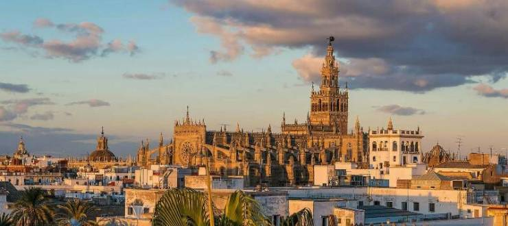
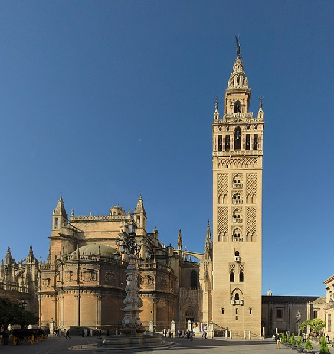

Севилья - город на юге Испании, столица Андалусии. Расположена на равнине на реке Гвадалквивир, которая делит город на две части - исторический центр (на левом берегу) и Триана. Севилья - один из самых очаровательных городов Испании, который может похвастаться удивительными достопримечательностями и реликвиями прошлого, элегантной архитектурой и волшебной атмосферой. Здесь, в столице Андалусии, сталкивается и причудливо смешивается восточная и западная культура, мавританское и испанское историческое наследие. Город очаровывает с первого взгляда, это настоящее культурное и историческое сердце Испании.
Каведральный собор
Кафедральный собор Севильи - самый большой готический храм в мире, объект Всемирного наследия ЮНЕСКО. Это религиозное сооружение уступает по размерам только собору св. Петра в Ватикане и св. Павла в Лондоне. Интересно, что собор был построен на месте мавританской мечети 12 века. Строительство храма началось в 1401 году, после того как испанцы отбили город, и закончилось только в 1506 году. Через пять лет после строительства рухнул купол. Его восстановили в 1519 году

Башня Хиральда
Ажурно-узорчатая башня Хиральда высотой около сотни метров величественно возвышается над прочими постройками исторического центра Севильи. Сейчас арабское сооружение, которое датируется 12 веком, выполняет роль колокольни Севильского собора, а когда-то, во времена мавров, это был минарет, который относился к севильской мечети. Верх башни, состоящий из 3 ярусов, снаружи покрыт ажурным каменным узором, внутреннее пространство занимают подъёмники, а в самой верхушке установлен 24-колокольный карильон. Всё это грандиозное сооружение венчает вращающаяся статуя-флюгер Хиральдильо, символизирующая триумф веры.

Здание Мэрии
Ажурно-узорчатая башня Хиральда высотой около сотни метров величественно возвышается над прочими постройками исторического центра Севильи. Сейчас арабское сооружение, которое датируется 12 веком, выполняет роль колокольни Севильского собора, а когда-то, во времена мавров, это был минарет, который относился к севильской мечети. Верх башни, состоящий из 3 ярусов, снаружи покрыт ажурным каменным узором, внутреннее пространство занимают подъёмники, а в самой верхушке установлен 24-колокольный карильон. Всё это грандиозное сооружение венчает вращающаяся статуя-флюгер Хиральдильо, символизирующая триумф веры.